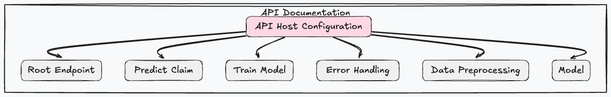

HDI Claims Prediction API Documentation
Inspired by the style and structure of Swagger API documentation, this document aims to provide a clear and organized reference. For an interactive API documentation, please visit after running the service http://127.0.0.1:8000/redoc`

Table of Contents
- API Host Configuration
- Root Endpoint
- Predict Claim
- Train Model
- Error Handling
- Data Preprocessing
- Model
API Host Configuration
The API is hosted on the following address:
- Host:
127.0.0.1 - Port:
8000
When making requests to the API, ensure that you use this base URL: http://127.0.0.1:8000
Root Endpoint
GET / (Check if the API is up and running)
### Description
This endpoint is used to check if the API server is running. If the server is up, it returns a welcome message.
### Parameters
None
### Responses
> | HTTP Code | Content-Type | Response |
> |-----------|--------------------|-----------------------------------------------|
> | `200` | `application/json` | `{"message": "Bienvenido al API de predicción de siniestros de HDI"}` |
### Example cURL
curl -X GET http://127.0.0.1:8000/
Predict Claim
POST /api/v1/predict/ (Predicts the repair time for a given claim)
### Description
This endpoint predicts the repair time for a given claim based on various parameters.
### Parameters
> | Name | Type | Data Type | Description |
> |----------------|--------|-----------|-------------------|
> | (Request Body) | | JSON | See example below |
### Request Body Example
{
"claim_id": 123,
"marca_vehiculo": "Toyota",
"antiguedad_vehiculo": 5,
"tipo_poliza": 2,
"taller": 10,
"partes_a_reparar": 2,
"partes_a_reemplazar": 1
}
curl -X POST -H "Content-Type: application/json" -d '{
"claim_id": 123,
"marca_vehiculo": "Toyota",
"antiguedad_vehiculo": 5,
"tipo_poliza": 2,
"taller": 10,
"partes_a_reparar": 2,
"partes_a_reemplazar": 1
}' http://127.0.0.1:8000/api/v1/predict/
Train Model
POST /api/v1/train/ (Endpoint for training the model)
### Description
This endpoint allows for training the model using a provided dataset file.
### Parameters
> | Name | Type | Data Type | Description |
> |------|-------------|---------------------|----------------------------------|
> | file | binary file | `multipart/form-data` | The file to be used for training. |
### Responses
> | HTTP Code | Content-Type | Response |
> |-----------|--------------------|---------------------------------------------|
> | `200` | `text/plain` | "Training successful" |
> | `422` | `application/json` | `{"code":"422", "message":"Validation Error"}` |
### Example cURL
curl -X POST -F "file=@/path/to/your/file.csv" http://127.0.0.1:8000/api/v1/train/
Error Handling
See individual endpoint responses for specific error codes. Common codes include:
400 Bad Request: The request was invalid or cannot be otherwise served.500 Internal Server Error: An error occurred on the server side.
Data Preprocessing
A summary of the five-step preprocessing pipeline applied before prediction, including null imputation. See the code for details.
Model
A linear regression model (linear_regression.pkl) is used to predict repair time based on preprocessed features.